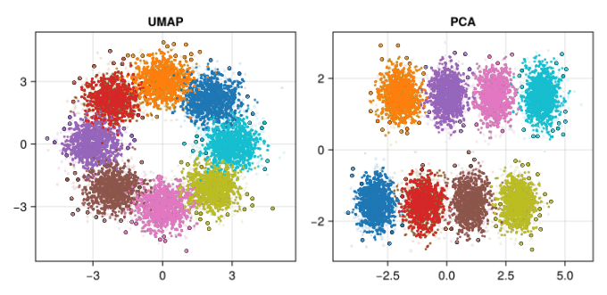
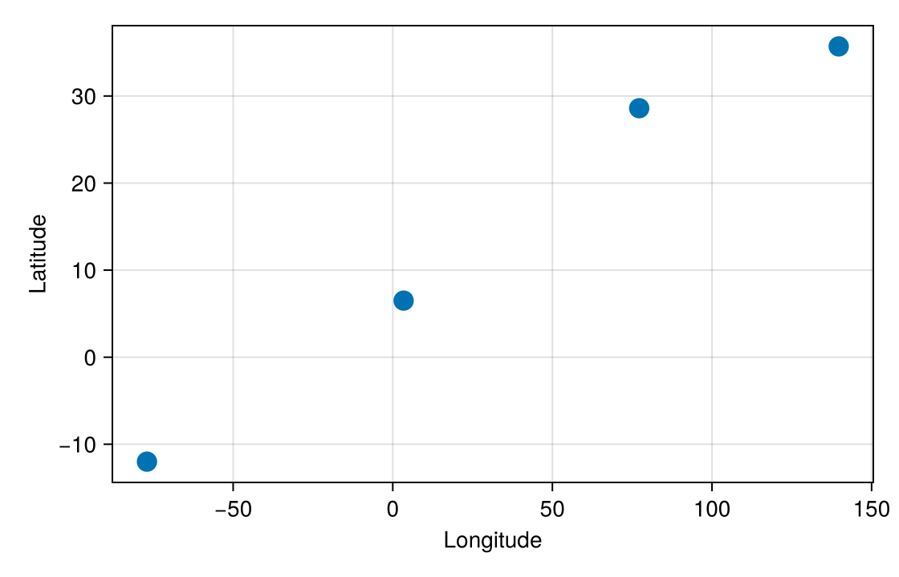

Selection
Clicking a mark selects it. The mark keeps its color while the rest of its plot fades, and its plot's field in the @bind value holds it until another click on that plot replaces it. Click the mark again to clear the selection. You can also start with a mark selected, or keep a selection when the figure is rebuilt.
The examples on this page use a scatter of cities, with each city's name in its payload's city field:
cities = interactables(s; id = :cities, payloads = rows)
@bind sel masque(fig, cities)The id names the field, so the selected city is sel.cities.
What replaces a selection
sel.cities starts as nothing, and clicking a city makes it that city's ElementEvent. Clicking another city replaces it, because a plot holds one selection. Clicking the selected city again, clicking empty space inside the axis, or pressing Escape clears it: the plot is back to full color and sel.cities is nothing again.
Each plot keeps its own selection, so in a figure with two scatters, clicking a point in one leaves the other's field as it was. A click on empty space clears only the plots in the axis you clicked, and Escape clears every plot in the figure. A click on a line or another mark that only shows a tooltip is not empty space, so it keeps the selection.
A selected point, bar, or shape with no other selected mark near it also gets a thin outline in a shade of its own color, so a few picks stay easy to find in a crowded plot. A selected line gets a ring instead, and a heatmap cell an outline. To fade the other marks more or less, set unpicked_opacity in Overlay styling.

Undo a change
To get back a selection that a click, a box, or Escape took away, press Cmd-Z (on a Mac) or Ctrl-Z (elsewhere) while the figure has focus, which it does once you click it or Tab to it. Each press steps back one change, and sel changes once, as it does for a click. Shift-Cmd-Z or Shift-Ctrl-Z steps forward again, and so does Ctrl-Y off a Mac. Undo covers the selection only, not sliders, menus, or the view, and it starts over when the cell runs again or when an onchange redraw changes a plot's marks. Cells that use sel respond to an undo as they do to a click, so anything your own code keeps from earlier picks, such as a label stored for each picked mark, comes back only if that code still holds it when the pick returns. After you click the figure, Cmd-Z or Ctrl-Z undoes its selection rather than your last edit to the code, so click into the code first to undo an edit there. With nothing to undo, the key does what it would anywhere else on the page.
Select several marks
A click selects one mark of a plot and replaces that plot's previous selection. To let a reader hold several, pass the plot's interactable with select = :many:
cities = interactables(s; id = :cities, payloads = rows, select = :many)
@bind sel masque(fig, cities)sel.cities is then a Vector{ElementEvent}, empty to start. A click on a city adds it to the selection, and a click on a selected city takes it out again, so [c.city for c in sel.cities] lists the cities picked, in the order they were picked. A click never throws the other picks away, and a click on empty space keeps them too, since a near miss is easy among many small marks; to start over, press Escape. Cmd-click (on a Mac) and Ctrl-click (elsewhere) do the same as a click. A legend entry and an AxisInteractable take select = :many the same way and give a vector of their events; a colorbar's pick is one value, so it raises an ArgumentError. A heatmap with select = :many holds a set of cells, as Select several cells shows.
To select every mark in an area, drag across it: a box follows the pointer, and when you let go the marks whose centre is inside it become the selection. On a line, that is its data points inside the box; on a heatmap, the cells the box touches. Each box adds to what you already picked, and a box that starts on a selected mark takes the marks it covers out instead. On a plot you can pan or orbit, a plain drag still moves the view, so hold Alt (Option on a Mac) to draw the box; Alt-drag works on every plot, and on a 3D plot it counts marks hidden behind others too. Escape while dragging drops the box and keeps the selection you had. On a touch screen a finger drag scrolls the page, so the box is drawn with a mouse or pen. Clicking a legend entry selects every mark of its plot in place of the ones you picked, Cmd-click or Ctrl-click adds them instead, and clicking a selected entry again takes them out. On a legend built with select = :many, a click adds them.
To keep a box on the plot that the reader can move and resize, use an ROIInteractable with selects, as Brush a region shows.
Start with a mark selected
To start with a mark selected, pass its position in the data you plotted as selected=. These are the same numbers pick.index gives, so selected = 1 is the first city:
@bind sel masque(fig, cities; selected = 1)The first city starts highlighted and sel.cities starts as its event, so other cells have something to show before anyone clicks. Click another city to replace it:
Notebook as text
Tokyo starts selected, and clicking another city replaces the selection.
Plot the cities and attach each city's name as its payload.
begin
lon = [139.7, 77.2, 3.4, -77.0]
lat = [35.7, 28.6, 6.5, -12.0]
rows = [(city = "Tokyo",), (city = "Delhi",), (city = "Lagos",), (city = "Lima",)]
fig = Figure(size = (560, 360))
ax = Axis(fig[1, 1]; xlabel = "Longitude", ylabel = "Latitude")
s = scatter!(ax, lon, lat; markersize = 18)
cities = interactables(s; id = :cities, payloads = rows)
nothing
endselected = 1 starts the widget with the first city selected, so sel.cities already holds its event. The id you gave the scatter names that field.
@bind sel masque(fig, cities; selected = 1)
This cell shows the selected city from the start, and responds when you click another.
isnothing(sel.cities) ? "click a city" : "$(sel.cities.city) selected"Tokyo selectedWhen the widget has more than one plot you could select, name the field: selected = (cities = 1,), or selected = (cities = 1, scatter_2 = 3) for one mark in each of two plots. In that case a bare number raises an ArgumentError, and so does a position outside your data.
A plot holds one selected mark, so selected = [1, 3] raises an ArgumentError. To start with several marks selected, pass the plot with select = :many, and selected = (cities = [1, 3],) starts with both. The target of a box with selects also takes a list, which replaces what the box starts with.
Points, bars, polygons, segments, and lines you name in bind can start selected, and so can the cells of a heatmap built with select = :many, as Select several cells shows. Axis readouts, boxes, thresholds, and the view cannot. A box or a threshold line starts where its bounds or value puts it, so to start one somewhere else, set those instead; see Read the box itself and Drag a threshold.
A RegionInteractable with several kinds of shape makes one part per kind, so name the part in selected=, as in selected = (cells = (circles = [1],),) for the id :cells. See Custom hits.
Keep a selection when the figure rebuilds
When the figure is rebuilt, for example because a slider changed the data, the widget starts over with nothing selected. A position in the old data can point at a different city in the new data, so Masque does not carry it over.
To keep a selection, keep what identifies the mark, such as the city's name, and look up its position after the rebuild. First, store the name in a cell that does not use sel:
last_city = Ref("Delhi")Update it from sel.cities in another cell:
if !isnothing(sel.cities)
last_city[] = sel.cities.city
endThen look up the city in the rebuilt data and pass its position as selected=. Here city_names lists the cities in the order you plotted them:
start = findfirst(name -> name == last_city[], city_names)@bind sel masque(fig, cities; selected = start)If the city is no longer in the data, findfirst returns nothing and no city starts selected.
Passing the widget its own value, selected = sel.cities, does not work: Pluto refuses the cell with a Cyclic references error. Between rebuilds you do not need it, because the widget keeps its highlight.
To select a mark from another widget's click, see Linked views.